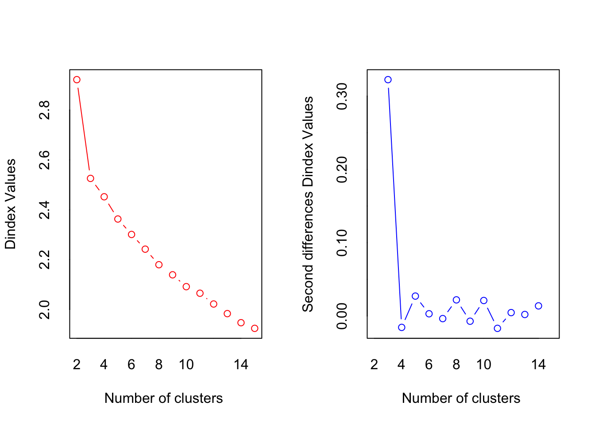

Chapter 36 Cluster Analysis
The goal of cluster analysis is to divide observations into groups (k groups) such that members within the same group are as similar as possible and members between groups are as different as possible. We will focus on the two most commonly used techniques: hierarchical clustering and K-means clustering. They are both very effective clustering methods, but they may not be suitable if you are analyzing large, complex datasets. So, we also study the partitioning around the center point, which uses as input a dissimilarity matrix based on the GoW metric. Finally I discuss a new technique that I have only recently learned and used - transforming data using random forests. The transformed data can be used as input for unsupervised learning.
聚类分析的目标是将 观测分成若干组（k个组），使同一组内的成员尽可能相似，不同组间的成员尽可能不同. 我们将重点讨论两种最常用的技术：层次聚类和 K均值聚类。它们都是非常有效的聚类方法，但如果你要分析的是大规模的高复杂度的数据集， 它们可能不太适合。所以，我们还要研究围绕中心点的划分，它使用基于果瓦度量的相异度矩阵作为输入。最后讨论一种我最近才学习和使用的新技术——使用随机森林转换数据。转换后的数 据可以用作无监督学习的输入。
36.1 Hierarchical Clustering
36.1.1 Introduction
层次聚类算法的基础是观测之间的相异度测量。我们使用的是通用的测量方式——欧氏距 离，当然还有其他方式。层次聚类是一种凝聚式的或自底向上的技术。
Agglomerative clustering
- 首先，所有观测都是自己本身的一 个簇；
- 然后，算法开始在所有的两点组合之中进行迭代搜索，找出最相似的两个 簇，将它们聚集成一个簇。所以，第一次迭代之后，有n 1个簇；第二次迭代 之后，有n 2个簇，依此类推
- 进行迭代时，除了距离测量之外，还有一个重要问题是需要确定观测组之间的测距方式，不 同类型的数据集需要使用不同的簇间测距方式。常用的测距方式类型:
- Ward距离, 使总的簇内方差最小，使用簇中的点到质心的误差平方和作为测量方式
- 最大距离（Complete linkage), 两个簇之间的距离就是两个簇中的观测之间的最大距离
- 质心距离（Centroid linkage), 两个簇之间的距离就是两个簇的质心之间的距离
dist()函数计算距离: 默认方式欧氏距离, 可以在这个函数中指定其他距离计算方式（如最大值距离、 曼哈顿距离、堪培拉距离、二值距离和闵可夫斯基距离）。
最后需要注意的是，要对你的数据进行标准化的缩放操作，使数据的均值为0， 标准差为1，这样在计算距离时才能进行比较。否则，变量的测量值越大，对距 离的影响就越大。
层次聚类算法的基础是观测之间的相异度测量。层次聚类(Hierarchical Clustering)是聚类算法的一种，通过计算不同类别数据点间的相似度来创建一棵有层次的嵌套聚类树。在聚类树中，不同类别的原始数据点是树的最低层，树的顶层是一个聚类的根节点。创建聚类树有自下而上合并和自上而下分裂两种方法
分层聚类可能比k均值有一些好处，例如不必预先指定聚类的数量，以及它可以产生很好的聚类的分层图示（这对于较小的数据集很有用）。但是，从实际的角度来看，层次聚类分析仍然涉及许多决策，这些决策可能会对结果的解释产生重大影响。
- 首先，像k均值一样，您仍然需要对要使用的相异性度量进行决策。 make a decision on the dissimilarity measure to use.
- 其次，需要确定链接方法。每种链接方法在对观察结果进行分组的方式上都有不同的系统趋势（或偏差），并且可能导致明显不同的结果。
- Each linkage method has different systematic tendencies (or biases) in the way it groups observations and can result in significantly different results.
- 例如，质心法倾向于产生不规则形状的簇。
- Ward的方法往往会产生具有大致相同数量观察值的聚类，并且其提供的解决方案往往会被异常值严重扭曲。鉴于这种趋势，所选算法与数据的基础结构之间应该存在匹配（例如样本大小，观察值分布以及包括哪些类型的变量-标称，有序，比率或区间）。
- 第三，尽管我们不需要预先指定簇的数量，但是我们经常仍然需要决定在哪里切割树状图以获得最终要使用的簇。not need to pre-specify the number of clusters, we often still need to decide where to cut the dendrogram in order to obtain the final clusters to use.
36.1.2 Hierarchical clustering algorithms
Hierarchical clustering can be divided into two main types:
- Agglomerative clustering: Commonly referred to as AGNES (AGglomerative NESting) works in a bottom-up manner. That is, each observation is initially considered as a single-element cluster (leaf). At each step of the algorithm, the two clusters that are the most similar are combined into a new bigger cluster (nodes). This procedure is iterated until all points are a member of just one single big cluster (root). The result is a tree that can be displayed using a dendrogram.
- Divisive hierarchical clustering: Commonly referred to as DIANA (DIvise ANAlysis) works in a top-down manner. DIANA is like the reverse of AGNES. It begins with the root, in which all observations are included in a single cluster. At each step of the algorithm, the current cluster is split into two clusters that are considered most heterogeneous. The process is iterated until all observations are in their own cluster.
聚集群集：通常称为AGNES（聚集嵌套）以自下而上的方式工作。 也就是说，每个观察值最初都被视为一个单元素簇（叶 leaf）。 在算法的每个步骤中，最相似的两个群集将合并为一个新的较大群集（节点 nodes）。 重复此过程，直到所有点仅是一个大群集（根 root）的成员为止。其结果是其可以使用树状显示的树。
分裂式层次聚类：通常称为DIANA（DIvise ANAlysis）以自上而下的方式工作。 DIANA就像AGNES的反面。 它从根开始，其中所有观测值都包含在一个群集中。 在算法的每个步骤中，当前群集都被分为两个群集，这两个群集被认为是最异构的。 重复此过程，直到所有观测值都在其自己的群集中。
36.1.3 Measure the dissimilarity between two clusters of observations
与k均值类似，使用距离量度（例如，欧几里得距离，曼哈顿距离等）来测量观测值的（非相似性）;欧几里得距离是最常用的默认。但是，层次聚类中的一个基本问题是：我们如何测量两个观察聚类之间的差异？已经开发出许多不同的簇集方法 cluster agglomeration methods（即，链接方法 Linkage）来回答这个问题。
- Maximum or complete linkage clustering: Computes all pairwise dissimilarities between the elements in cluster 1 and the elements in cluster 2, and considers the largest value of these dissimilarities as the distance between the two clusters. It tends to produce more compact clusters.
- Minimum or single linkage clustering: Computes all pairwise dissimilarities between the elements in cluster 1 and the elements in cluster 2, and considers the smallest of these dissimilarities as a linkage criterion. It tends to produce long, “loose” clusters.
- Mean or average linkage clustering: Computes all pairwise dissimilarities between the elements in cluster 1 and the elements in cluster 2, and considers the average of these dissimilarities as the distance between the two clusters. Can vary in the compactness of the clusters it creates.
- Centroid linkage clustering: Computes the dissimilarity between the centroid for cluster 1 (a mean vector of length p, one element for each variable) and the centroid for cluster 2.
- Ward’s minimum variance method: Minimizes the total within-cluster variance. At each step the pair of clusters with the smallest between-cluster distance are merged. Tends to produce more compact clusters.
最大或完整的链接聚类：计算聚类1中的元素与聚类2中的元素之间的所有成对相异性，并将这些相异性的最大值视为两个聚类之间的距离。它倾向于产生更紧凑的簇。
最小或单个链接聚类：计算群集1中的元素与群集2中的元素之间的所有成对差异，并将这些差异中的最小值视为链接标准。它倾向于产生长的“松散”簇。
均值或平均连锁聚类：计算聚类1中的元素与聚类2中的元素之间的所有成对差异，并将这些差异的平均值视为两个聚类之间的距离。可以改变它创建的集群的紧凑性。
质心连锁聚类：计算聚类1的质心和聚类2的质心之间的差异（长度的平均向量 p ，每个变量一个元素。
Ward的最小方差方法：最小化集群内的总方差。在每个步骤中，将群集间距离最小的一对群集合并。倾向于生产更紧凑的簇。
36.2 K-means Clustering
像其他聚类算法一样，k均值试图将观察分为互斥组（或簇），以使同一聚类中的观察尽可能相似（即，类内相似度很高），而来自不同聚类的观察则尽可能不相似（即，类间相似度低）。在k均值聚类中，每个聚类都由其中心（即质心）表示，该中心对应于分配给该聚类的观测值的平均值。查找这些聚类的过程类似于k最近邻居（KNN）算法。
但是，K-Means是无监督学习的聚类算法，没有样本输出；而KNN是监督学习的分类算法，有对应的类别输出。KNN基本不需要训练，对测试集里面的点，只需要找到在训练集中最近的k个点，用这最近的k个点的类别来决定测试点的类别。而K-Means则有明显的训练过程，找到k个类别的最佳质心，从而决定样本的簇类别。两者也有一些相似点，两个算法都包含一个过程，即找出和某一个点最近的点。两者都利用了最近邻(nearest neighbors)的思想
K-Means算法的思想很简单，对于给定的样本集，按照样本之间的距离大小，将样本集划分为K个簇。让簇内的点尽量紧密的连在一起，而让簇间的距离尽量的大。如果用数据表达式表示，假设簇划分为 \((C_1,C_2,...C_k)\) ，则我们的目标是最小化平方误差\(E\)：
\[ E = \sum\limits_{i=1}^k\sum\limits_{x \in C_i} ||x-\mu_i||_2^2 \]
其中\(u_i\)是簇\(C_i\)的均值向量，有时也称为质心，表达式为：
\[ \mu_i = \frac{1}{|C_i|}\sum\limits_{x \in C_i}x \]
直接求上式的最小值并不容易，只能采用迭代方法。假设\(k=2\)。随机选择了两个k类所对应的类别质心，然后分别求样本中所有点到这两个质心的距离，并标记每个样本的类别为和该样本距离最小的质心的类别，经过计算样本和红色质心和蓝色质心的距离，我们得到了所有样本点的第一轮迭代后的类别。分别求其新的质心，新的质心位置已经发生了变动，即将所有点的类别标记为距离最近的质心的类别并求新的质心。
36.2.1 Algorithm
使用K均值聚类时，需要明确指定所需的簇的数目，然后算法开始迭代，直到每个观测都属 于某个簇。算法的目标是使簇内的差异最小，簇内差异由欧氏距离的平方定义。所以，第k个簇 的簇内差异等于簇内所有两个观测之间的欧氏距离的平方和，再除以簇内观测的数量
迭代过程:
1. 设定:你需要的簇的确切数量(k)。
2. 初始化:随机选择k个观测作为初始均值。
3. 迭代:
将每个观测分配给离它最近的簇中心点(使簇内平方和最小)，建立k个簇;
将每个簇的中心点作为新的均值;
重复上面两个步骤，直至收敛，即簇中心点不再改变。
因为第1步中的初始分配是随机的，所以会造成每次聚类结果不一致。因此，重要 的一点是，要进行多次初始分配，让软件找出最优的解。
更具体而言，对于K-Means算法，首先要注意的是k值的选择，一般来说，我们会根据对数据的先验经验选择一个合适的k值，如果没有什么先验知识，则可以通过交叉验证选择一个合适的k值。在确定了k的个数后，我们需要选择k个初始化的质心 (随机质心)。由于我们是启发式方法，k个初始化的质心的位置选择对最后的聚类结果和运行时间都有很大的影响，因此需要选择合适的k个质心，最好这些质心不能太近。
初始分配是随机的，所以会造成每次聚类结果不一致。因此，重要的一点是，要进行多次初始分配，让软件找出最优的解。
迭代过程: 输入是样本集 \(D=\left\{x_{1}, x_{2}, \ldots x_{m}\right\}\),聚类的族树k,最大迭代次数N 输出是族划分 \(C=\left\{C_{1}, C_{2}, \ldots C_{k}\right\}\)
从数据集D中随机选择k个样本作为初始的k个质心向量： \(\left\{\mu_{1}, \mu_{2}, \ldots, \mu_{k}\right\}\)
对于 \(n=1,2, \ldots, N\)
- 将族划分C初始化为 \(C_{t}=\varnothing t=1,2 \ldots k\)
- 对于 \(i=1,2 \ldots\), 计算样本 \(x_{i}\) 和各个质心向量 \(\mu_{j}(j=1,2, \ldots k)\) 的距离: \(d_{i j}=\left\|x_{i}-\mu_{j}\right\|_{2}^{2},\) 将 \(x_{i}\) 标记最小的为 \(d_{i j}\) 所对应的类别 \(\lambda_{i_{\circ}}\) 此时 更新 \(C_{\lambda_{i}}=C_{\lambda_{i}} \cup\left\{x_{i}\right\}\)
- 对于 \(j=1,2, \ldots, k,\) 对 \(C_{j}\) 中所有的样本点重新计算新的质心 \(\mu_{j}=\frac{1}{\left|C_{j}\right|} \sum_{x \in C_{j}} x\)
- 如果所有的k个质心向量都没有发生变化, 则转到步骤3)
输出族划分 \(C=\left\{C_{1}, C_{2}, \ldots C_{k}\right\}\)
36.2.2 K-Means++
初始化的质心的位置选择对最后的聚类结果和运行时间都有很大的影响，因此需要选择合适的k个质心。如果仅仅是完全随机的选择，有可能导致算法收敛很慢。K-Means++算法就是对K-Means随机初始化质心的方法的优化。
K-Means++的对于初始化质心的优化策略如下：
- 从输入的数据点集合中随机选择一个点作为第一个聚类中心 \(\mu_{1}\)
- 对于数据集中的每一个点 \(x_{i},\) 计算它与已选择的聚类中心中最近聚类中心的距离
\[ D\left(x_{i}\right)=\arg \min \left\|x_{i}-\mu_{r}\right\|_{2}^{2} r=1,2, \ldots k_{\text {selected }} \]
- 选择一个新的数据点作为新的聚类中心, 选择的原则是: \(D(x)\) 较大的点, 被选取作为聚类中心的概率较大
- 重复b和c直到选择出k个聚类质心
- 利用这k个质心来作为初始化质心去运行标准的K-Means算法
36.2.3 elkan K-Means
传统的K-Means算法中，我们在每轮迭代时，要计算所有的样本点到所有的质心的距离，这样会比较的耗时。elkan K-Means算法就是从这块入手加以改进。它的目标是减少不必要的距离的计算。如何定义不需要计算的距离。
elkan K-Means利用了两边之和大于等于第三边,以及两边之差小于第三边的三角形性质, 来减少距离的计算。
- 第一种规律是对于一个样本点 \(x\) 和两个质心 \(\mu_{j_{1}}, \mu_{j_{2} \circ}\) 如果我们预先计算出了这两个质心之间的距离 \(D\left(j_{1}, j_{2}\right),\) 则如果计算发现 \(2 D\left(x, j_{1}\right) \leq D\left(j_{1}, j_{2}\right)\),我们立即就可以知道 \(D\left(x, j_{1}\right) \leq D\left(x, j_{2}\right)\) 。此时我们不需要再计算 \(D\left(x, j_{2}\right)\),也就是说省了一步距离计算。
- 第二种规律是对于一个样本点 \(x\) 和两个质心 \(\mu_{j_{1}}, \mu_{j_{2} \circ}\) 我们可以得到 \(D\left(x, j_{2}\right) \geq \max \left\{0, D\left(x, j_{1}\right)-D\left(j_{1}, j_{2}\right)\right\}_{\circ}\) 这个从三角形的性质也很容易得到。
利用上边的两个规律，elkan K-Means比起传统的K-Means迭代速度有很大的提高。但是如果我们的样本的特征是稀疏的，有缺失值的话，这个方法就不使用了，此时某些距离无法计算，则不能使用该算法。
36.2.4 Mini Batch K-Means
传统的K-Means算法中，要计算所有的样本点到所有的质心的距离。如果样本量非常大，比如达到10万以上，特征有100以上，此时用传统的K-Means算法非常的耗时，就算加上elkan K-Means优化也依旧。在大数据时代，这样的场景越来越多。此时Mini Batch K-Means应运而生。
Mini Batch，也就是用样本集中的一部分的样本来做传统的K-Means，这样可以避免样本量太大时的计算难题，算法收敛速度大大加快。当然此时的代价就是我们的聚类的精确度也会有一些降低。一般来说这个降低的幅度在可以接受的范围之内。
在Mini Batch K-Means中，我们会选择一个合适的批样本大小batch size，我们仅仅用batch size个样本来做K-Means聚类。batch size一般是通过无放回的随机采样得到的。为了增加算法的准确性，一般会多跑几次Mini Batch K-Means算法，用得到不同的随机采样集来得到聚类簇，选择其中最优的聚类簇。
36.3 Gower’s coefficient and PAM
36.3.1 Gower’s coefficient
果瓦系数与围绕中心的划分
无论层次聚类还是K均值聚类，都不是为分析混合数据(既包括定量数据又包括定性数据)而专门设计的
使用果瓦相异度系数将混合数据转换为适当的特征 空间。在这种方法中，你甚至可以使用因子作为输入变量 处理混合数据，比 如可以先进行主成分分析, 建立潜变量，然后使用潜变量作为聚类的输入 聚类算法使用 PAM聚类算法，而不是K均值, PAM和K均值很相似, 有两个明显的优点
1. PAM可以接受相异度矩阵作为输入，这样即可处理混合数据
2. PAM对于异常值和不对称数据的鲁棒性更好，因为它最小化的是相异度总和，而不是欧氏距离的平方和果瓦系数比较两个成对的实例，并计算它们之间的相异度，实质上就是每个变量的贡献的加 权平均值。对于两个实例i与j，果瓦系数定义如下
\[S_{ij} = sum(W_{ijk} * S_{ijk}) / sum(W_{ijk})\]
\(S_{ijk}\)是第k个变量的贡献。如果第k个变量是有效的，\(W_{ijk}\)是1，否则是0
36.3.2 不同数据类型的相异度计算 (距离法)
把一个观测看做M维空间中的一个点，并在空间中定义距离。基于距离的聚类算法是把距离较近的点可以归入同一类，距离远的点归入不同的类。常见的距离度量方法有欧几里得距离、切比雪夫距离、曼哈顿距离、兰氏距离等方法。
36.3.2.1 欧几里得距离
a=matrix(rnorm(15,0,1),c(3,5))
a## [,1] [,2] [,3] [,4] [,5]
## [1,] -1.3241919 -0.4817309 1.4587885 1.1850132 1.83220873
## [2,] 0.2977847 1.5475181 0.1184761 0.7724773 -0.08162939
## [3,] -0.2679569 0.7510573 0.4082950 0.4187877 0.53067007dist(a,p=2)## 1 2
## 2 3.518247
## 3 2.453577 1.240329## 第一个行与第二行的距离为2.174710；第二行与第三行的距离为3.96659236.3.2.2 切比雪夫距离
国际象棋中，国王可以直行、横行、斜行，所以国王走一步可以移动到相邻8个方格中的任意一个。国王从格子(x1,y1)走到格子(x2,y2)最少需要多少步？这个距离就叫切比雪夫距离。
a=matrix(rnorm(15,0,1),c(3,5))
a## [,1] [,2] [,3] [,4] [,5]
## [1,] 1.6826054 0.6232546 -1.9238304 -0.4152758 -1.1384053
## [2,] 0.4101967 1.0778897 0.3703312 -1.2325156 -0.1996074
## [3,] 0.3961249 1.4981663 0.6183718 -0.6150889 0.4037277dist(a,"maximum")## 1 2
## 2 2.2941616
## 3 2.5422022 0.617426636.3.2.3 曼哈顿距离
顾名思义，在曼哈顿街区要从一个十字路口开车到另一个十字路口，驾驶距离显然不是两点间的直线距离。这个实际驾驶距离就是“曼哈顿距离”。曼哈顿距离也称为“城市街区距离”(City Block distance)。
aa=matrix(rnorm(15,0,1),c(3,5))
dist(aa,"manhattan")## 1 2
## 2 7.559459
## 3 3.872417 4.70649736.3.2.4 兰氏距离
兰氏距离对数据的量纲不敏感。不过兰氏距离假定变量之间相互独立，没有考虑变量之间的相关性。
aa=matrix(rnorm(15,0,1),c(3,5))
dist(aa, method = "canberra")## 1 2
## 2 4.550979
## 3 3.702120 4.12670836.3.3 PAM
中心点是簇内所有观测中，使相异度(使用果瓦系数表示)最小的那个观测。所 以，同K均值一样，如果指定5个簇，就可以将数据划分为5份。
PAM算法的目标是，使所有观测与离它们最近的中心点的相异度最小。该算法按照下面的步骤迭代:
1. 随机选择k个观测作为初始中心点;
2. 将每个观测分配至最近的中心点;
3. 用非中心点观测替换中心点，并计算相异度的变化;
4. 选择能使总相异度最小的配置;
5. 重复第(2)步~第(4)步，直至中心点不再变化。果瓦系数和PAM都可以使用R中的cluster包实现。使用daisy()函数计算相异度矩阵，从而 计算果瓦系数，然后使用pam()函数进行实际的数据划分
36.4 BIRCH Clustering
36.4.1 BIRCH Introduction
BIRCH的全称是利用层次方法的平衡迭代规约和聚类（Balanced Iterative Reducing and Clustering Using Hierarchies）. BIRCH算法比较适合于数据量大，类别数K也比较多的情况。它运行速度很快，只需要单遍扫描数据集就能进行聚类.
BIRCH算法利用了一个树结构来帮助我们快速的聚类，这个数结构类似于平衡B+树，一般将它称之为聚类特征树(Clustering Feature Tree，简称CF Tree)。这颗树的每一个节点是由若干个聚类特征(Clustering Feature，简称CF)组成。个节点包括叶子节点都有若干个CF，而内部节点的CF有指向孩子节点的指针，所有的叶子节点用一个双向链表链接起来。
36.4.2 聚类特征CF与聚类特征树CF Tree
在聚类特征树中，一个聚类特征CF是这样定义的：每一个CF是一个三元组，可以用（N，LS，SS）表示。其中N代表了这个CF中拥有的样本点的数量；LS代表了这个CF中拥有的样本点各特征维度的和向量，SS代表了这个CF中拥有的样本点各特征维度的平方和。
例子，在CF Tree中的某一个节点的某一个CF中，有下面5个样本(3,4), (2,6), (4,5), (4,7), (3,8)。则它对应的N=5， \(LS=(3+2+4+4+3, 4+6+5+7+8) = (16,30)\)$ , $\(SS=(3^2+2^2+4^2 +4^2+3^2 + 4^2+6^2+5^2 +7^2+8^2) = (54 + 190) = 244\)
CF有一个很好的性质，就是满足线性关系， \(CF1+CF2 = (N_1+N_2, LS_1+LS_2, SS_1 +SS_2)\) 如果把这个性质放在CF Tree上，对于每个父节点中的CF节点，它的(N,LS,SS)三元组的值等于这个CF节点所指向的所有子节点的三元组之和。
对于CF Tree，我们一般有几个重要参数，第一个参数是每个内部节点的最大CF数B，第二个参数是每个叶子节点的最大CF数L，第三个参数是针对叶子节点中某个CF中的样本点来说的，它是叶节点每个CF的最大样本半径阈值T，也就是说，在这个CF中的所有样本点一定要在半径小于T的一个超球体内。
36.4.3 CF Tree的生成
- 从根节点向下寻找和新样本距离最近的叶子节点和叶子节点里最近的CF节点
- 如果新样本加入后，这个CF节点对应的超球体半径仍然满足小于阈值T，则更新路径上所有的CF三元组，插入结束。否则转入3.
- 如果当前叶子节点的CF节点个数小于阈值L，则创建一个新的CF节点，放入新样本，将新的CF节点放入这个叶子节点，更新路径上所有的CF三元组，插入结束。否则转入4。
- 将当前叶子节点划分为两个新叶子节点，选择旧叶子节点中所有CF元组里超球体距离最远的两个CF元组，分布作为两个新叶子节点的第一个CF节点。将其他元组和新样本元组按照距离远近原则放入对应的叶子节点。依次向上检查父节点是否也要分裂，如果需要按和叶子节点分裂方式相同。
36.4.4 BIRCH算法
将所有的训练集样本建立了CF Tree，一个基本的BIRCH算法就完成了，对应的输出就是若干个CF节点，每个节点里的样本点就是一个聚类的簇。也就是说BIRCH算法的主要过程，就是建立CF Tree的过程。(有一些可选的算法步骤)
- 将所有的样本依次读入，在内存中建立一颗CF Tree
- （可选）将第一步建立的CF Tree进行筛选，去除一些异常CF节点，这些节点一般里面的样本点很少。对于一些超球体距离非常近的元组进行合并
- （可选）利用其它的一些聚类算法比如K-Means对所有的CF元组进行聚类，得到一颗比较好的CF Tree.这一步的主要目的是消除由于样本读入顺序导致的不合理的树结构，以及一些由于节点CF个数限制导致的树结构分裂。
- （可选）利用第三步生成的CF Tree的所有CF节点的质心，作为初始质心点，对所有的样本点按距离远近进行聚类。这样进一步减少了由于CF Tree的一些限制导致的聚类不合理的情况。
36.5 Application
36.5.1 Data preparation
library(cluster) # conduct cluster analysis
library(compareGroups) # build descriptive statistic tables
library(HDclassif) # contains the dataset
library(NbClust) # cluster validity measures
library(sparcl) # colored dendrogram
## 数据集位于HDclassif包
## 数据包括178种葡萄酒，有13个变量表示酒中的化学成分，还有一个标号变量Class，表示品 种等级或葡萄种植品种。在聚类过程中，我们不会使用这个标号变量，而是用它验证模型性能。
data(wine)
str(wine)## 'data.frame': 178 obs. of 14 variables:
## $ class: int 1 1 1 1 1 1 1 1 1 1 ...
## $ V1 : num 14.2 13.2 13.2 14.4 13.2 ...
## $ V2 : num 1.71 1.78 2.36 1.95 2.59 1.76 1.87 2.15 1.64 1.35 ...
## $ V3 : num 2.43 2.14 2.67 2.5 2.87 2.45 2.45 2.61 2.17 2.27 ...
## $ V4 : num 15.6 11.2 18.6 16.8 21 15.2 14.6 17.6 14 16 ...
## $ V5 : int 127 100 101 113 118 112 96 121 97 98 ...
## $ V6 : num 2.8 2.65 2.8 3.85 2.8 3.27 2.5 2.6 2.8 2.98 ...
## $ V7 : num 3.06 2.76 3.24 3.49 2.69 3.39 2.52 2.51 2.98 3.15 ...
## $ V8 : num 0.28 0.26 0.3 0.24 0.39 0.34 0.3 0.31 0.29 0.22 ...
## $ V9 : num 2.29 1.28 2.81 2.18 1.82 1.97 1.98 1.25 1.98 1.85 ...
## $ V10 : num 5.64 4.38 5.68 7.8 4.32 6.75 5.25 5.05 5.2 7.22 ...
## $ V11 : num 1.04 1.05 1.03 0.86 1.04 1.05 1.02 1.06 1.08 1.01 ...
## $ V12 : num 3.92 3.4 3.17 3.45 2.93 2.85 3.58 3.58 2.85 3.55 ...
## $ V13 : int 1065 1050 1185 1480 735 1450 1290 1295 1045 1045 ...names(wine) <- c("Class", "Alcohol", "MalicAcid", "Ash", "Alk_ash",
"magnesium", "T_phenols", "Flavanoids", "Non_flav",
"Proantho", "C_Intensity", "Hue", "OD280_315", "Proline")
names(wine)## [1] "Class" "Alcohol" "MalicAcid" "Ash" "Alk_ash"
## [6] "magnesium" "T_phenols" "Flavanoids" "Non_flav" "Proantho"
## [11] "C_Intensity" "Hue" "OD280_315" "Proline"df <- as.data.frame(scale(wine[, -1]))
str(df)## 'data.frame': 178 obs. of 13 variables:
## $ Alcohol : num 1.514 0.246 0.196 1.687 0.295 ...
## $ MalicAcid : num -0.5607 -0.498 0.0212 -0.3458 0.2271 ...
## $ Ash : num 0.231 -0.826 1.106 0.487 1.835 ...
## $ Alk_ash : num -1.166 -2.484 -0.268 -0.807 0.451 ...
## $ magnesium : num 1.9085 0.0181 0.0881 0.9283 1.2784 ...
## $ T_phenols : num 0.807 0.567 0.807 2.484 0.807 ...
## $ Flavanoids : num 1.032 0.732 1.212 1.462 0.661 ...
## $ Non_flav : num -0.658 -0.818 -0.497 -0.979 0.226 ...
## $ Proantho : num 1.221 -0.543 2.13 1.029 0.4 ...
## $ C_Intensity: num 0.251 -0.292 0.268 1.183 -0.318 ...
## $ Hue : num 0.361 0.405 0.317 -0.426 0.361 ...
## $ OD280_315 : num 1.843 1.11 0.786 1.181 0.448 ...
## $ Proline : num 1.0102 0.9625 1.3912 2.328 -0.0378 ...table(wine$Class)##
## 1 2 3
## 59 71 4836.5.2 Hierarchical Clustering
要在R中建立层次聚类模型，可以使用stats包中的hclust()函数。这个函数需要两个基本输 入:距离矩阵和聚类方法。使用dist()函数可以轻松生成距离矩阵，我们使用的是欧氏距离。 可以使用的聚类方法有若干种，hclust()函数使用的默认方法是最大距离法
30种不同的聚类有效性指标。表现最好的前5种指标是CH指数、Duda指数、Cindex、Gamma 和Beale指数。另外一种确定簇数目的著名方法是gap统计量
在R中，我们可以使用NbClust包中的NbClust()函数，求出23种聚类有效性指标的结果，包 括Miligan和Cooper论文中最好的5种和gap统计量
使用这个函数时，你需要指定簇的最小值和最大值、距离类型、测距方式和有效性指标。在以下的代码中可以看到，我们要建立一个名 为numComplete的对象，函数指定使用欧氏距离，簇的最小数量为2，最大数量为6，测距方式为 最大距离法，并使用所有有效性指标。
Hubert指数图: 在左侧的图中，你要找出一 个明显的拐点;在右侧的图中，你要找到峰值.左图在3个簇的地方有个拐点，右图在3个簇的时候达到峰值
Dindex图:提供了同样的信息
numComplete <- NbClust(df, distance = "euclidean",
min.nc = 2, max.nc = 6,
method = "complete", index = "all")
## *** : The Hubert index is a graphical method of determining the number of clusters.
## In the plot of Hubert index, we seek a significant knee that corresponds to a
## significant increase of the value of the measure i.e the significant peak in Hubert
## index second differences plot.
## 
## *** : The D index is a graphical method of determining the number of clusters.
## In the plot of D index, we seek a significant knee (the significant peak in Dindex
## second differences plot) that corresponds to a significant increase of the value of
## the measure.
##
## *******************************************************************
## * Among all indices:
## * 1 proposed 2 as the best number of clusters
## * 11 proposed 3 as the best number of clusters
## * 6 proposed 5 as the best number of clusters
## * 5 proposed 6 as the best number of clusters
##
## ***** Conclusion *****
##
## * According to the majority rule, the best number of clusters is 3
##
##
## *******************************************************************## 每种有效性指标的最优簇数 量和与之对应的指标值
## 第一个指标(KL)的最优簇数量是5，第二个指标(CH)的最优簇数量是3
numComplete$Best.nc## KL CH Hartigan CCC Scott Marriot TrCovW
## Number_clusters 5.0000 3.0000 3.0000 5.000 3.0000 3.000000e+00 3.00
## Value_Index 14.2227 48.9898 27.8971 1.148 340.9634 6.872632e+25 22389.83
## TraceW Friedman Rubin Cindex DB Silhouette Duda
## Number_clusters 3.0000 3.0000 5.0000 3.0000 6.0000 3.0000 5.0000
## Value_Index 256.4861 10.6941 -0.1489 0.3551 1.6018 0.2038 0.8856
## PseudoT2 Beale Ratkowsky Ball PtBiserial Frey McClain
## Number_clusters 5.0000 5.0000 3.0000 3.0000 6.0000 1 2.0000
## Value_Index 6.3314 1.1253 0.3318 462.0304 0.5877 NA 0.7687
## Dunn Hubert SDindex Dindex SDbw
## Number_clusters 6.0000 0 6.0000 0 6.0000
## Value_Index 0.1892 0 0.9951 0 0.5031## 选择3个簇进行聚类，现在计算距离矩阵，并建立层次聚类模型
dis <- dist(df, method = "euclidean")
hc <- hclust(dis, method = "complete")
## 可视化的通用方式是画出树状图，可以用plot函数实现。注意，参数hang=-1表示 将观测排列在图的底部
## 树状图表明了观测是如何聚集的，图中的连接(也可称为分支)告诉我们哪些观测是相 似的。分支的高度表示观测之间相似或相异的程度
plot(hc, hang = -1,labels = FALSE, main = "Complete-Linkage")
## 想使聚类可视化效果更好，可以使用sparcl包生成彩色树状图。要对合适数目的簇上色， 需要使用cutree()函数对树状图进行剪枝，以得到合适的簇的数目。这个函数还可以为每个观 测生成簇标号:
comp3 <- cutree(hc, 3)
ColorDendrogram(hc, y = comp3, main = "Complete", branchlength = 50)
## 我指定了参数branchlength=50，这个值要根据你自己的数据确定。因为我们已 经有了簇标号，所以可以建立一个表格查看每个簇中观测的数量
table(comp3)## comp3
## 1 2 3
## 69 58 51table(comp3, wine$Class)##
## comp3 1 2 3
## 1 51 18 0
## 2 8 50 0
## 3 0 3 48## 行是簇标号，列是品种等级标号。聚类结果匹配了84%的品种等级
(51+50+48)/178## [1] 0.8370787## Ward距离法。代码和前面的一样，首先确定簇的数目，应该将method的值改为 Ward.D2
numWard <- NbClust(df, diss = NULL, distance = "euclidean",
min.nc = 2,
max.nc = 6,
method= "ward.D2",
index = "all")
## *** : The Hubert index is a graphical method of determining the number of clusters.
## In the plot of Hubert index, we seek a significant knee that corresponds to a
## significant increase of the value of the measure i.e the significant peak in Hubert
## index second differences plot.
## 
## *** : The D index is a graphical method of determining the number of clusters.
## In the plot of D index, we seek a significant knee (the significant peak in Dindex
## second differences plot) that corresponds to a significant increase of the value of
## the measure.
##
## *******************************************************************
## * Among all indices:
## * 2 proposed 2 as the best number of clusters
## * 18 proposed 3 as the best number of clusters
## * 2 proposed 6 as the best number of clusters
##
## ***** Conclusion *****
##
## * According to the majority rule, the best number of clusters is 3
##
##
## *******************************************************************hcWard <- hclust(dis, method = "ward.D2")
plot(hcWard, hang = -1, labels = FALSE, main = "Ward's-Linkage")
## 图中显示的3个簇区别十分明显，每个簇中观测的数量大致相同。计算每个簇的大小，并与 品种等级标号进行比较
ward3 <- cutree(hcWard, 3)
table(ward3, wine$Class) ##
## ward3 1 2 3
## 1 59 5 0
## 2 0 58 0
## 3 0 8 48## 另一个表比较两种方法的观测匹配情况
table(comp3, ward3)## ward3
## comp3 1 2 3
## 1 53 11 5
## 2 11 47 0
## 3 0 0 51## 箱线图可以很好地比较变量的分布，它可以展示最小值、第一四分位数、中位数、第三四分 位数、最大值和可能的离群点
par(mfrow = c(1, 2))
boxplot(wine$Proline ~ comp3,
main = "Proline by Complete Linkage")
boxplot(wine$Proline ~ ward3,
main = "Proline by Ward's Linkage")
## Ward距离法中 的第一个和第二个簇具有更紧凑的四分位距，没有疑似离群点36.5.3 K-means Clustering
## 函数中将method的值设定为kmeans即可，同时将最大簇数目放大到15
numKMeans <- NbClust(df, min.nc = 2, max.nc = 15, method = "kmeans")
## *** : The Hubert index is a graphical method of determining the number of clusters.
## In the plot of Hubert index, we seek a significant knee that corresponds to a
## significant increase of the value of the measure i.e the significant peak in Hubert
## index second differences plot.
## 
## *** : The D index is a graphical method of determining the number of clusters.
## In the plot of D index, we seek a significant knee (the significant peak in Dindex
## second differences plot) that corresponds to a significant increase of the value of
## the measure.
##
## *******************************************************************
## * Among all indices:
## * 2 proposed 2 as the best number of clusters
## * 19 proposed 3 as the best number of clusters
## * 1 proposed 14 as the best number of clusters
## * 1 proposed 15 as the best number of clusters
##
## ***** Conclusion *****
##
## * According to the majority rule, the best number of clusters is 3
##
##
## *******************************************************************## 3个簇再次成为最优解
set.seed(1234)
km <- kmeans(df, 3, nstart = 25)
table(km$cluster)##
## 1 2 3
## 62 65 51## 簇之间的观测数量分布得非常均衡。我曾经不止一次遇到过这种情况，在一个有很多变量的 大数据集中，不管使用多少个簇的K均值聚类，都得不到有价值且令人信服的结果。对聚类结果 的另一种分析方式是查看簇中心点矩阵，它保存了每个簇中每个变量的中心点值:
km$centers## Alcohol MalicAcid Ash Alk_ash magnesium T_phenols
## 1 0.8328826 -0.3029551 0.3636801 -0.6084749 0.57596208 0.88274724
## 2 -0.9234669 -0.3929331 -0.4931257 0.1701220 -0.49032869 -0.07576891
## 3 0.1644436 0.8690954 0.1863726 0.5228924 -0.07526047 -0.97657548
## Flavanoids Non_flav Proantho C_Intensity Hue OD280_315
## 1 0.97506900 -0.56050853 0.57865427 0.1705823 0.4726504 0.7770551
## 2 0.02075402 -0.03343924 0.05810161 -0.8993770 0.4605046 0.2700025
## 3 -1.21182921 0.72402116 -0.77751312 0.9388902 -1.1615122 -1.2887761
## Proline
## 1 1.1220202
## 2 -0.7517257
## 3 -0.405942836.5.4 Gower’s coefficient and PAM
## 处理因子变量，所以可以将酒 精函数转换为因子，它有两个水平:高/低
wine$Alcohol <- as.factor(ifelse(df$Alcohol > 0, "High", "Low"))
## 建立相异度矩阵，使用cluster包中的daisy()函数
disMatrix <- daisy(wine[, -1], metric = "gower")
set.seed(123)
pamFit <- pam(disMatrix, k = 3)
table(pamFit$clustering)##
## 1 2 3
## 62 71 45table(pamFit$clustering, wine$Class)##
## 1 2 3
## 1 57 5 0
## 2 2 64 5
## 3 0 2 43wine$cluster <- pamFit$clustering
## 使用compareGroups包建立一张描述性统计表
group <- compareGroups(cluster ~ ., data = wine)
clustab <- createTable(group)
clustab##
## --------Summary descriptives table by 'cluster'---------
##
## _________________________________________________________
## 1 2 3 p.overall
## N=62 N=71 N=45
## ¯¯¯¯¯¯¯¯¯¯¯¯¯¯¯¯¯¯¯¯¯¯¯¯¯¯¯¯¯¯¯¯¯¯¯¯¯¯¯¯¯¯¯¯¯¯¯¯¯¯¯¯¯¯¯¯¯
## Class 1.08 (0.27) 2.04 (0.31) 2.96 (0.21) <0.001
## Alcohol: <0.001
## High 62 (100%) 1 (1.41%) 29 (64.4%)
## Low 0 (0.00%) 70 (98.6%) 16 (35.6%)
## MalicAcid 2.00 (0.83) 1.95 (0.91) 3.41 (1.09) <0.001
## Ash 2.42 (0.27) 2.28 (0.30) 2.44 (0.18) 0.002
## Alk_ash 17.2 (2.75) 20.2 (3.20) 21.6 (2.26) <0.001
## magnesium 105 (11.7) 95.6 (16.8) 99.1 (10.8) 0.001
## T_phenols 2.83 (0.36) 2.20 (0.56) 1.71 (0.37) <0.001
## Flavanoids 2.96 (0.42) 1.99 (0.76) 0.81 (0.31) <0.001
## Non_flav 0.29 (0.07) 0.36 (0.12) 0.46 (0.12) <0.001
## Proantho 1.89 (0.43) 1.60 (0.60) 1.18 (0.43) <0.001
## C_Intensity 5.44 (1.29) 3.17 (1.01) 7.51 (2.36) <0.001
## Hue 1.07 (0.13) 1.03 (0.21) 0.69 (0.13) <0.001
## OD280_315 3.12 (0.36) 2.75 (0.58) 1.70 (0.26) <0.001
## Proline 1070 (279) 535 (167) 635 (119) <0.001
## ¯¯¯¯¯¯¯¯¯¯¯¯¯¯¯¯¯¯¯¯¯¯¯¯¯¯¯¯¯¯¯¯¯¯¯¯¯¯¯¯¯¯¯¯¯¯¯¯¯¯¯¯¯¯¯¯¯# export2csv(clustab,file = "wine_clusters.csv")
# export2pdf(clustab, file = "wine_clusters.pdf")